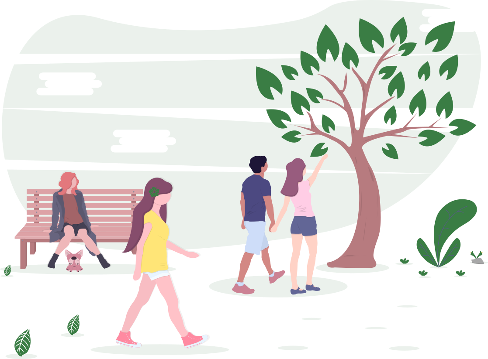
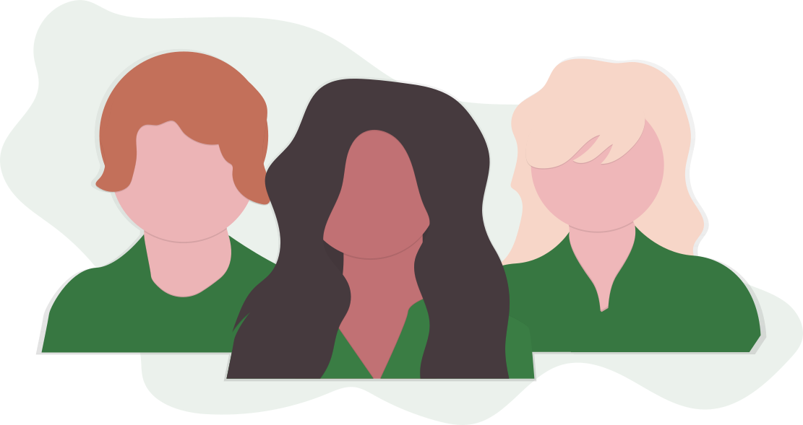
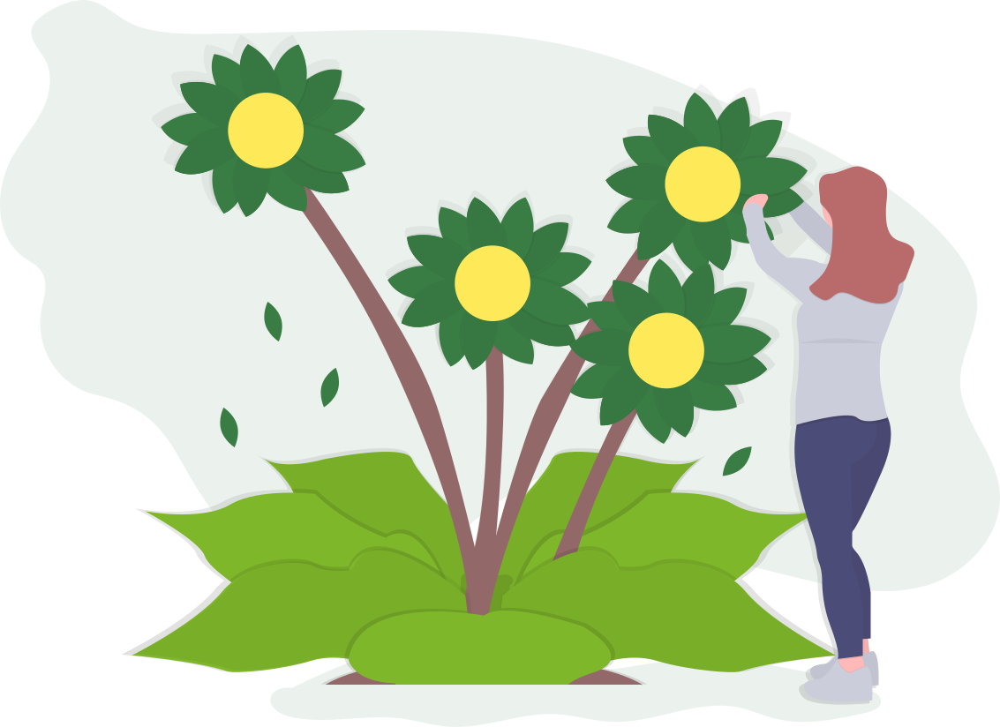
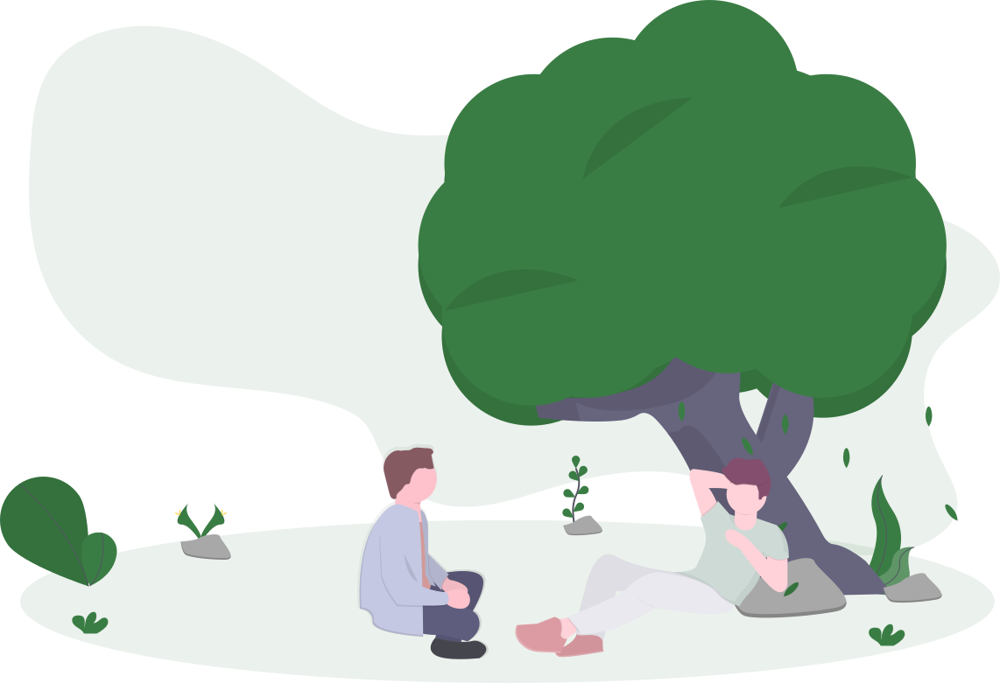

Gemeinnütziger Verein · Wien
Gemeinsam angekommen. Wir sind da.
Wir helfen Menschen, in Österreich Fuß zu fassen und Zusammenhalt zu erleben – mit Sprachförderung, Begegnung und praktischer Unterstützung für alle Generationen.

Über uns
„Wir Sind Da – Verein für gegenseitige Hilfe und Integration“ ist ein gemeinnütziger, nicht auf Gewinn gerichteter Verein mit Sitz in Wien. Unsere Tätigkeit erstreckt sich auf ganz Österreich; die Errichtung von Zweigvereinen ist geplant.
Uns verbindet ein einfaches Anliegen: niemand soll allein durchs Leben gehen müssen. Deshalb schaffen wir Räume, in denen sich Menschen begegnen, voneinander lernen und einander helfen – gleich, woher sie kommen und wie alt sie sind.
- Gemeinnützig – unsere Tätigkeit ist nicht auf Gewinn gerichtet.
- Sitz in Wien – tätig in ganz Österreich.
- Für alle Generationen – von Kindern bis Seniorinnen und Senioren.

Unsere Ziele
Unsere Arbeit folgt klaren Zielen – sie kommen aus unserer Satzung und beschreiben, wofür wir jeden Tag eintreten:
-
Ankommen & integrierenUnterstützung von Jugendlichen und jungen Erwachsenen bei der Integration in die österreichische Gesellschaft.
-
Traditionen & Werte verstehenVermittlung von Kenntnissen über österreichische Traditionen, Werte und grundlegende gesetzliche Regelungen.
-
Ältere Menschen begleitenHilfe und Unterstützung für Seniorinnen und Senioren.
-
In schweren Zeiten beistehenUnterstützung von Kindern, Jugendlichen und Erwachsenen mit familiären oder sozialen Belastungen.
-
Mädchen & Frauen stärkenFörderung von Mädchen und Frauen in persönlicher Entwicklung, Bildung und beruflicher Integration.
-
Sprache & OrientierungFörderung von Sprachkenntnissen (insbesondere Deutsch) und gesellschaftlicher Orientierung.
-
Kultur, Sport & KreativitätFörderung von kulturellem, sportlichem und kreativem Austausch.

Aktivitäten
Vereine wachsen durch das, was sie gemeinsam tun. Unser Angebot ist bewusst niederschwellig – alle sind willkommen, Vorkenntnisse sind keine nötig:
-
Deutsch & GesellschaftVorträge zu Spracherwerb und kulturellem Verständnis – Deutsch, Gesellschaft und Alltag in Österreich.
-
Workshops & SchulungenPraxisnahe Workshops zu Themen, die im Alltag wirklich weiterhelfen.
-
Lesung & DiskussionLesekreise, Lesungen und Diskussionsrunden zum gemeinsamen Nachdenken.
-
Kunst & KreativitätKünstlerische Workshops: Zeichnen, Malerei, Kalligrafie und Design.
-
Sport & WettbewerbeSportliche und künstlerische Wettbewerbe, die zusammenbringen und motivieren.
-
Treffen & BeratungSoziale Treffen, Beratungen und Austauschabende – offen für alle.
Du hast eine Idee für ein Angebot? Sprich uns an – wir freuen uns.
Mitmachen
Ob als Teilnehmerin oder Teilnehmer, Freiwillige:r oder Spender:in – jede Hand zählt. Es gibt viele Wege, bei „Wir Sind Da“ dabei zu sein:
-
Mitglied werdenWerde Teil der Gemeinschaft und gestalte unsere Arbeit mit.
-
Freiwillig helfenBringe deine Zeit und Fähigkeiten in Workshops und Treffen ein.
-
Spenden & unterstützenUnterstütze unsere Arbeit – ideell oder materiell.

Kontakt
Du hast Fragen, willst mitmachen oder uns unterstützen? Schreib uns einfach – wir melden uns so bald wie möglich.
office@wir-sind-da.atPostalisch erreichen Sie uns über unseren Sitz in Wien (genaue Adresse auf Anfrage).